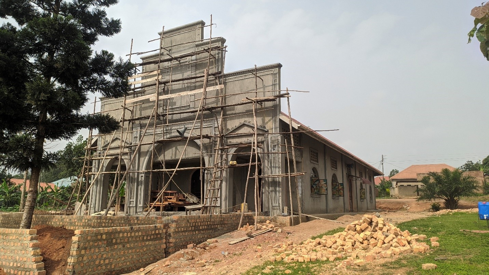
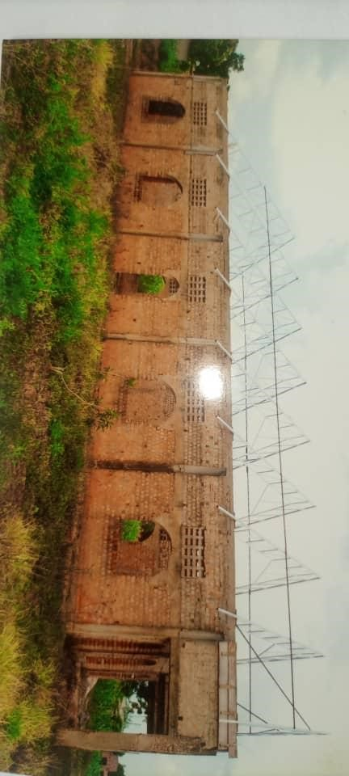

<!DOCTYPE html>
<html lang="en">

<head>
    <meta charset="UTF-8">
    <meta name="viewport" content="width=device-width, initial-scale=1.0">
    <title>History of St. Cyprian Kawanda Parish</title>
    
    <link rel="stylesheet" href="css/base.css">
    <link rel="stylesheet" href="css/main.css">
    <link rel="stylesheet" href="https://cdnjs.cloudflare.com/ajax/libs/font-awesome/5.15.4/css/all.min.css">
    <!-- Icons -->
     <style>
    


/* Heading */
.history h2 {
    font-size: 28px; /* Font size for the heading */
    color: #0056b3; /* Dark blue color */
    margin-bottom: 15px; /* Space below the heading */
    text-align: center; /* Center align */
}

/* Paragraph */
.history p {
    font-size: 18px; /* Font size for the paragraph */
    line-height: 1.6; /* Line height for readability */
    color: #555; /* Slightly lighter text color */
}

.history-imagee img {
    height: 600px; /* Set a fixed height for the image */
    width: auto; /* Maintain aspect ratio */
    border-radius: 10px; /* Optional: Rounded corners */
    transition: transform 0.3s; /* Optional: Smooth scaling effect on hover */ 
    margin: 70px;
}

/* Image Section */
.history-image {
    text-align: center; /* Center align image */
    margin-top: 20px; /* Space above image */
}

.history-image {
    width: 100%; /* Responsive image */
    max-width: 600px; /* Max width to limit image size */
    height: auto; /* Maintain aspect ratio */
    border-radius: 10px; /* Rounded corners for the image */
    box-shadow: 0 2px 10px rgba(0, 0, 0, 0.1); /* Soft shadow for image */
}

.history-imagee {
    width: auto; /* Responsive image */
    height: 300px; /* Max width to limit image size */
    height: auto; /* Maintain aspect ratio */
    border-radius: 10px; /* Rounded corners for the image */
    
}

html, body {
    background-color: #f0f0f0; /* Replace with your desired color */
}

.custom-background {
    background-color: #f0f0f0; /* Replace with your desired color */
    margin: 0;
    padding: 0;
}


.contain {
    max-width: 1000px;
    margin: 0 auto;
    padding: 20px;
   
    border-radius: 8px;
   
}


header h1 {
    font-size: 2.5rem;
    color: #007bff;
    margin: 0;
}

h2 {
    font-size: 2rem;
    color: #495057;
    margin-top: 30px;
    border-bottom: 2px solid #007bff;
    padding-bottom: 10px;
}


/* Main Container */
.container {
    max-width: 1200px; /* Maximum width */
    margin: 30px auto; /* Center container with space at top and bottom */
    padding: 20px;
  
    border-radius: 10px; /* Rounded corners */
   
}

/* Heading Styles */
h2 {
    font-size: 32px; /* Main heading size */
    color: #007BFF; /* Main heading color */
    margin-bottom: 20px;
    text-align: center; /* Center align */
}

h3 {
    font-size: 24px; /* Subheading size */
    color: #007BFF; /* Subheading color */
    margin-bottom: 10px;
    border-bottom: 2px solid #007BFF; /* Underline for emphasis */
    padding-bottom: 5px; /* Padding below heading */
}

/* Paragraph Styles */
.contain p {
    font-size: 16px; /* Paragraph text size */
    color: #555; /* Darker gray for readability */
    margin-bottom: 20px; /* Spacing between paragraphs */
    line-height: 1.7; /* Line height for better readability */
}
.history-section p {
    font-size: 16px; /* Paragraph text size */
    color: #555; /* Darker gray for readability */
    margin-bottom: 20px; /* Spacing between paragraphs */
    line-height: 1.7; /* Line height for better readability */
}

/* Image Styles */
.history-image {
    margin: 10px 0; /* Spacing around images */
}

.history-image img {
    max-width: 100%; /* Responsive image */
    border-radius: 10px; /* Rounded corners */
    box-shadow: 0 4px 10px rgba(0, 0, 0, 0.15); /* Shadow for depth */
}

/* History Grid Styles */
.history-grid {
    display: grid;
    grid-template-columns: 1fr 1fr; /* Two equal columns */
    gap: 20px; /* Space between grid items */
    margin-top: 20px; /* Space above grid */
}

/* Media Queries for Responsiveness */
@media (max-width: 768px) {
    .history-grid {
        grid-template-columns: 1fr; /* Single column on small screens */
    }

    h2 {
        font-size: 28px; /* Smaller heading on mobile */
    }

    h3 {
        font-size: 22px; /* Smaller subheading on mobile */
    }
}
.timeline-section {
    background-color: #f4f4f4;
    padding: 40px 0;
}

.timeline-section h2 {
    text-align: center;
    margin-bottom: 30px;
    font-size: 2em;
    color: #094789;
}

.timeline {
    max-width: 800px;
    margin: 0 auto;
}

.timeline-item {
    background-color: #fff;
    padding: 20px;
    margin-bottom: 20px;
    border-left: 5px solid #094789;
}

.timeline-item h3 {
    font-size: 1.5em;
    margin-bottom: 10px;
}

.bd{
    background-color: #5b5456;
}
.history-section {
    background-color: #f7f9fb;
    padding: 40px 0;
}

.history-section h2 {
    font-size: 32px;
    font-weight: bold;
    color: #333;
    margin-bottom: 20px;
}

.history-section p {
    font-size: 18px;
    line-height: 1.6;
    color: #555;
    margin-bottom: 20px;
}

.history-section h3 {
    font-size: 24px;
    color: #444;
    margin-top: 30px;
    margin-bottom: 10px;
}

.history-section ul {
    margin-left: 20px;
    list-style-type: square;
}

.history-section ul li {
    font-size: 18px;
    color: #555;
    margin-bottom: 10px;
}
.image-gallery {
    padding: 40px 20px;
    background-color: #f5f5f5;
    font-family: Arial, sans-serif;
  }

  .container {
    max-width: 1200px;
    margin: 0 auto;
  }

  .gallery-grid {
    display: grid;
    grid-template-columns: repeat(3, 1fr); /* 3 images per row */
    gap: 20px;
  }

  .gallery-item img {
    width: 100%;
    height: 200px; /* Set a fixed height */
    object-fit: cover; /* Ensure the images fill the area and remain proportional */
    border-radius: 10px;
    box-shadow: 0 4px 8px rgba(0, 0, 0, 0.1);
    transition: transform 0.3s ease;
  }

  .gallery-item img:hover {
    transform: scale(1.05);
  }

  @media (max-width: 768px) {
    .gallery-grid {
      grid-template-columns: repeat(2, 1fr); /* 2 images per row for medium screens */
    }
  }

  @media (max-width: 480px) {
    .gallery-grid {
      grid-template-columns: 1fr; /* 1 image per row for small screens */
    }
  }
     </style>


</head>

<body>
   

       <!-- header
    ================================================== -->
    <header>
        <div class="top-bar">
            <div class="logo">
                
                <div class="logo-text">
                    <h1>St.Cyprian Kawanda</h1>
                    <p>Parish Kampala</p>
                    <p>God is one and Christ is one and his church is one</p>
                </div>
            </div>
            <div class="buttons">
                <a href="mass_time.html" class="button">Mass Schedule</a>
                <a href="offering.html" class="button">Donate</a>
            </div>
            <div class="social-media">
                <a href="https://www.facebook.com/profile.php?id=61566735257997"></a>
                <a href="https://x.com/@StCyprianParish"></a>
                <!-- <a href="#"></a> -->
                <a href="https://www.youtube.com/@StCyprianParishKawnada"></a>
                <a href="https://www.tiktok.com/@st.cyprian.parish"></a>
            </div>
        </div>
    </header>

    <nav>
        <ul>
            <li><a href="index.html">Home</a></li>
            <li class="dropdown"><a href="history.html">About Us <span>&#9660;</span></a>
                <ul class="dropdown-content">
                    <li><a href="history.html">History</a></li>

                    <li><a href="sub_parish.html">sub parishes</a></li>
                    <li><a href="parish_leaders.html">Leadership</a></li>
                    <li><a href="corevalues_goals.html">core values & goals</a></li>
                    <li><a href="mission.html">Mission & Vision</a></li>
                </ul>
            </li>
            <li class="dropdown"><a href="mass_time.html">Schedules <span>&#9660;</span></a>
                <ul class="dropdown-content">
                    <li><a href="mass_time.html">Mass Time</a></li>
                    <li><a href="confession.html">Confession</a></li>
                    <li><a href="adoration.html">Adoration</a></li>
                    <li><a href="Liturgical.html">Liturgical</a></li>
                </ul>
            </li>
            <li class="dropdown"><a href="chior.html">Liturgy <span>&#9660;</span></a>
                <ul class="dropdown-content">

                    <li><a href="chior.html">Choirs</a></li>
                    <li><a href="alter_server.html">Altar Servers</a></li>
                    <li><a href="lector.html">Lector</a></li>
                    <li><a href="ushers.html">Ushers</a></li>

                </ul>
            </li>
            <li class="dropdown"><a href="baptism.html">Sacraments <span>&#9660;</span></a>
                <ul class="dropdown-content">
                    <li><a href="baptism.html">Baptism</a></li>
                    <li><a href="eucharist.html">Eucharist</a></li>
                    <li><a href="confession.html">Confirmation</a></li>
                </ul>
            </li>
            <li class="dropdown"><a href="Presbytery.html">Projects <span>&#9660;</span></a>
                <ul class="dropdown-content">
                    <li><a href="Presbytery.html">Presbytery</a></li>
                    
                </ul>
            </li>
            <li><a href="patners.html">Our Patners</a></li>
            <li><a href="media.html">Media</a></li>
            <li><a href="contact.html">Contact Us</a></li>
        </ul>
    </nav>


        


        </section>

       

        <div class="container">
            <div class="history">
                <h2>History of St. Cyprian Catholic Parish Kawanda</h2>
                <p>Ebiseera ebyasookera ddala, eyo nga okutuuka mu
                    1920, Abakristu abaali mu Kawanda baalina enkola ey’okwegattanga mu ssaala ez’ekisinde ne mu
                    Ssappule. Okusomanga kuno kwabanga mu maka
                    ag’omukristu omu gwe baabanga balonze.
                    Eklezia eyasooka</p>

                <p>Mu mwaka ogwa 1930, Omugenzi Daudi Namukundi yawaayo ettaka okwazimbibwa Eklezia eyasooka.
                    Ekifo kino we wali kaakati essomero erya St. James
                    Buuzabalyawo Primary School. Klezia eno yali ya
                    budongo nga yali eserekeddwa essubi.
                    Ekisomesa kitandika </p>

                <p>Mu 1930 nga guggwaako Ekisomesa kyagunjibwawo.
                    Olwo kyali kitwala e Miruka ebiri Musaale A ne B,
                    okwali ebyalo Kawanda – Nkokonjeru, Kirinnyabigo,
                    Kaayi ne Nakyessanja.
                    Ekisomesa olwo kyali kitwalibwa Parish ey’e Gayaza. Olwo okusoma Sunday, okubatiza, kalimweezi,
                    okufuna Confirmansio, okumala omugigi saako
                    n’okugattibwa mu bufumbo obutukuvu, byonna byali
                    bya ku kigo e Gayaza. </p>

                <p>Abakulu abe Gayaza bajjanga mu biseera ebimu, okulambulanga ku Bakristu abaali mu Kisomesa. Bano
                    baasuzibwanga mu maka ag’Omukristu eyabanga
                    alondeddwa Omusomesa.
                    Entambuza y’Ekisomesa</p>

                <p>Nazzikuno Omusomesa
                    ye yali avunannyizibwa ku
                    byonna ebifa mu Kisomesa
                    awamu n’okukunngaanya
                    Endobolo okuva mu Bakristu
                    okugitwala e Gayaza.
                    Omusomesa eyasooka e
                    Kawanda yali Omugenzi
                    Yowana Ziriddamu. Ono
                    oluvannyuma yasengukira
                    e Kyanja mu Kyaddondo,
                    n’aweereza nga Omusomesa
                    waayo. Eyo gye yafiira mu
                    1985, n’aziikibwa awo ku
                    Klezia e Kyanja.</p>

                <p>Ziriddamu ono ye yayigiriza
                    Omugenzi Dominiko Mukasa obusomesa era oluvannyuma ye yamuddira mu bigere. Dominiko yali
                    Musomesa e Kawanda</p>

                <p>okutuusa lwe yafa mu 1978. Yaziikibwa awo awaali
                    Eklezia eyasooka, ku ssomero lya St. James Buuzabalyawo Primary School. </p>

                <h1>Ekisomesa kikulakulana</h1>

                <p>Okutandika awo mu 1930, waaliwo Abakristu abaali
                    bakolera mu kitongole ekinoonyereza ku by’obulimi
                    – Kawanda Research Station, abaatandika okusenga
                    mu Kisomesa. Bano begatta ku Bakristu abaaliwo, ne
                    batandika okuzimba Eklezia eya matoffaali, oluvannyuma baayongerako ennyumba ey’Omusomesa
                    ssaako n’essomero eryali ery’okuyigirizanga abaana
                    eby’eddiini n’ebyamagezi ag’ensi. <h4>Mu Bakristu bano
                    mwe mwali</h4> </p>

                <ul>
                    <li>Joseph Musisi Bukundukundu – Ono ye Kojja wa
                        Mr. Michael Ssembajjwe ow’ebyettaka ku Parish. </li>
                    <li>. Mathias Bulega Mabizzi – Taata wa Ms. Felista
                        Namagga Omuwanika ow’Ekisomesa kya St. Dominic Kawanda Sub-Parish. </li>
                    <li> Joseph Matovu Bemba Tegeebikkwa – Muzadde
                        wa Mrs. Thereza Mwanje abaatutandikira Eklezia eno
                        empya. </li>
                    <li>Michael Ssenyonga – Muzadde wa Rev. Fr. Eustace
                        Ssekyanzi R.I.P </li>
                    <li>Mathias Ssajjabbi – Taata wa Rev. Sr. Rose Nassali
                        ne Rev. Sr. Angella Nakigudde aba Comboni Missionary Sisters. </li>
                </ul>
                    <h1>Bano beegatiibwako abakristu abalala abaasangibwa
                        mu Kisomesa</h1>
                    <ul>
                        <li>
                            Daudi Namukundi – Jjajja wa Rev. Fr. Emmanuel
                            Tamale – Chancellor wa Mityana Diocese.
                        </li>

                        <li>Peter Birawuli – Taata wa Tereza Nassuuna R.I.P.
                            omu ku baasokera ddala okuba Bannaggye mu
                            Kawanda. </li>
                        <li>John Mary Kiwanuka – Taata wa Mr. Joseph
                            Kamyuka R.I.P. eyaliko Ssabakristu owe Kisomesa
                            okuva mu 1996 - 2000</li>
                        <li>Peter Mukasa Kasirye Kasumuluzo – Taata wa
                            Peter Mukasa Kasumuluzo Omukristu kati ali mu St.
                            Andrew Kirinyabigo Sub Parish.</li>
                        <li>Francis Katumba – Muzadde owa eyaliko Omusacristia Bridget Nantu</li>
                        <li>Patirisi </li>
                        <li>Lumonde – Jjajja wa Mrs. Cissy Mugoowa – Omusomesa owa St. Balikuddembe Kagoma Sub Parish.
                        </li>
                        <li> Ephuraim Ssajjabbi</li>
                        <li>Mu 1940, Omugenzi Daudi Namukundi yawaayo
                            ekibanja kye eri Ekisomesa, Omusomesa asobolenga okulimirangako emmere. Ekifo kino, kakaati
                            we
                            wali Eklezia empya, eyabbulwamu Omutuukirivu
                            Dominiko awali ekitebe kyaffe ekikulu ekya St. Cyprian Kawanda Parish.
                            Mu 1960, bwe waatandikibwawo Parish eya Jinja
                            Karoli, olwo n’Ekisomesa kino ekye Kawanda ne
                            kizzibwa mu Parish eyo okuva mu ye Gayaza.
                            Awo Abakristu baatandikiriza okuzimba Eklezia eya
                            bbulooka zennyini, era ebisinga ku byakozesebwa mu
                            kuzimba, baabijjanga mu maka gaabwe.
                            Abakristu mu Bukulembeze bw’Ekisomesa </li>

                        <li>Mu biseera ebyasooka, Omusomesa ye yali avunanyizibwa ku Kisomesa kyonna, olwo
                            n’ayambibwako
                            Abakristu ye be yabanga yeerondedde n’abanjula eri
                            Omukulu w’Ekifo.
                            Mu 1967, okulonda abakulembeze kwatandika mu
                            bisomesa nga baalondebwanga Abakristu abakulu ate
                            mu Klezia.
                            Ebifo ebyalondebwa mwe mwali </li>

                        <li>Ssabakristu – Ebiseera ebyo yayitibwanga
                            “Pulezidenti”
                            Omuwandiisi
                            Omuwanika
                            Omukulu w’Abazadde
                            Mu bakulembeze abasooka mwe mwali:-
                            Abagenzi; Joseph Kaggwa, Joseph Matovu, Joseph
                            Musisi, Francis Katumba.
                            Nga mu baalondebwanga ku Kisomesa mwe
                            mwalondebwanga abo abatuulanga ku Parish Council. </li>

                            <li>Mu 1981, Abakulembeze baatandika okulondebwanga okuva ku Bubondo olwo nga n’ebifo eby’obukulembeze byali byeyongeddeko okutuuka ku mukaaga 
                                (6). Obubondo mu Kawanda bwali bukyali busatu. </li>
                                <li> Nakyessanja – St. Kizito </li>
                                <li>Kirinnyabigo – St. Andre</li>
                                <li> Kawanda Nkokonjeru – St. Steven </li>


                    </ul>
                    

                <p>ga okulimirangako emmere. Ekifo kino, kakaati we 
wali Eklezia empya, eyabbulwamu Omutuukirivu 
Dominiko awali ekitebe kyaffe ekikulu ekya St. Cyprian Kawanda Parish. 
Mu 1960, bwe waatandikibwawo Parish eya Jinja 
Karoli, olwo n’Ekisomesa kino ekye Kawanda ne 
kizzibwa mu Parish eyo okuva mu ye Gayaza. 
Awo Abakristu baatandikiriza okuzimba Eklezia eya 
bbulooka zennyini, era ebisinga ku byakozesebwa mu 
kuzimba, baabijjanga mu maka gaabwe. 
Abakristu mu Bukulembeze bw’Ekisomesa 
Mu biseera ebyasooka, Omusomesa ye yali avunanyizibwa ku Kisomesa kyonna, olwo n’ayambibwako 
Abakristu ye be yabanga yeerondedde n’abanjula eri 
Omukulu w’Ekifo. 
Mu 1967, okulonda abakulembeze kwatandika mu 
bisomesa nga baalondebwanga Abakristu abakulu ate 
mu Klezia. 
Ebifo ebyalondebwa mwe mwali 
Ssabakristu – Ebiseera ebyo yayitibwanga 
“Pulezidenti” 
Omuwandiisi 
Omuwanika 
Omukulu w’Abazadde 
Mu bakulembeze abasooka mwe mwali:- 
Abagenzi; Joseph Kaggwa, Joseph Matovu, Joseph 
Musisi, Francis Katumba. 
Nga mu baalondebwanga ku Kisomesa mwe 
mwalondebwanga abo abatuulanga ku Parish Council. 
Mu 1981, Abakulembeze baatandika okulondebwanga okuva ku Bubondo olwo nga n’ebifo eby’obukulembeze byali byeyongeddeko okutuuka ku mukaaga 
(6). Obubondo mu Kawanda bwali bukyali busatu.</p>
<ul>
    <li>Nakyessanja – St. Kizito</li>
    <li>Kirinnyabigo – St. Andrew </li>
    <li>Kawanda Nkokonjeru – St. Steven </li>
</ul> 
<p>Buli okulonda okwaddiriranga, ebifo eby’obukulembeze byagenda byongerwangako. 
    Mu 2014, Obubondo bwayongerwako okutuukira 
    ddala ku musanvu (7) </p>

    <ul>
<li> St.Andrew - Kirinnyabigo </li>
<li>St. Charles Lwanga - Kaayi </li>
<li>St. Kizito - Wabitembe </li>
<li>St. Mbaaga - Ku Mayanja </li>
<li> St. Mugagga - Kawanda Central </li>
<li>St. Noah - Nakyessanja</li>
<li>St. Steven - Mu Kivulu </li>
    </ul>

  
<h>Okwesingira Dominiko Omutuukirivu</h>
<p>Mu 1978, Olukiiko olwe Ssaza ery’e Kampala olwali 
    mu nteekateeka y’okukuza Centenary y’okujja kw’eddiini enkatoliki mu Uganda, lwalina enkyuukakyuka 
    ze lwalangirira. Nga muzo mwe mwali buli Parsh 
    n’Ebisomesa byonna okufunayo Omutuukirivu gwe 
    baba basingira ebifo byaabwe. Ebisomesa byali biyinza okulonda erinnya ery’omukristu omu gwe bamanyi obulungi ate nga mukuukuutivu mu by’eddiini. 
    Olukiiko olw’e Kawanda kye lwava lwalonda 
    Dominiko Omutuukirivu kuba lye lyali erinnya 
    ery’Omusomesa. 
    Entebe ez’omu Eklezia</p>
    <p>ntebe ezasooka mu Eklezia, zaaletebwa Omw. Pascali Musoke eyali e Kirinnyabigo. Zino zaali kkumi 
        n’assatu (13) mu mwaka 1998. Mu biseera ebyo entebe ez’essomero ze z’akozesebwanga okutuulwako mu 
        Eklezia. 5</p>


<h1>Okuzimba Eklezia endala</h1>
<p>Mu ntandikwa y’okuzimba Eklezia endala, kino kyali 
    kirabo ekyatuweebwa Abakristu abe Proscot (Whiston) Liverpool mu Bungereza eri Ekisomesa. Era nga 
    eno ye yali Omwami n’Omukyala E.N. Mwanje, nga 
    bano be baatutemera omusingi awamu n’okugizimba 
    okutuuka kumpi ku ‘Wall Plate’. Omusingi gwa Eklezia eno gwaweebwa omukisa Rev. Fr. Herman Nsubuga mu January 2002. Mukyala Mwanje ye muwala 
    wa Abagenzi Omwami n’Omukyala Joseph Matovu e 
    Kirinnyabigo. </p>

    <p>Eklezia bwe yatuuka ku ‘Wall Plate’ olukiiko olwali 
        luvunanyizibwa ku by’okuzimba nga lukulirwa Mw. 
        Paul Sserubiri ate oluvannyuma olwakulemberwa Mw. Matia Mukasa, nga luli wamu n’Abakristu, 
        baakola kyonna ekisoboka okulaba nga Eklezia eno 
        eggwa. Wadde yali tennaggwa bulungi, yasomerwangamu mu nnaku ezimu naddala olunaku olw’ekisomesa (Sub Parish Day). </p>

        <p>Eklezia yakomererwa mu April 2013 ate mu April 
            2014, olukiiko olw’Ekisomesa nga luli ne Ssabakristu 
            Mr. Michael Ssembajjwe lwasalawo okusengukira 
            ddala okudda mu Eklezia empya. Era ku Easter eya 
            20/4/2014, okusenguka ne kulangirirwa mu butongole. Weewawo Abakristu baasigala n’omulimu ogwali 
            ogw’amaanyi, ogw’okugiggala n’okugimaliriza obulungi saako n’okugiteekamu byonna ebyetaagisa. 
             Okusituka mu By’ensoma</p>
             <p>Abakristu bwe baagenda beeyongera okujjumbira 
                okufuna Amasakramentu, n’okusoma ku Sunday, 
                olukiiko olw’Ekisomesa nga lukulemberwa Mr. 
                Christopher Mwambazi, awo mu 2008, lwasaba 
                Omukulu w’Ekifo Rev. Fr. Gerald Jjuuko akkirize 
                Ekisomesa okuba ne ‘Service’ ebbiri buli lwa Sunday. 
                Olwo Ekisomesa ky’e Kawanda ne kiba ekisaale mu 
                Parish okuba ne ‘services’ ebbiri (2). 
                Ate mu 2009, Omukulu w’Ekifo Rev. Fr. Emmanuel Kalema ng’asinziira ku bujjumbize obwo, yakola 
                entegeka eri Ekisomesa okufunanga Missa kumpi 
                buli lwa Sunday awamu ne ku makya ag’oku Monday 
                ne Tuesday buli week. Enteekateeka eno era yagobererwa n’Omukulu w’Ekifo eyamuddira mu bigere Rev. 
                Fr. Richard Kakoma. </p>

                <p>Liba teriri busa, Rev. Fr. Sylevester Buwembo n’atuuka mu Jinja Karoli nga Omukulu w’Ekifo mu October 2018. Enteekateeka eno n’agyongeramu omuzinzi 
                    ekisomesa ne kitandika okufuna Missa ku makya buli 
                    lunaku. </p>

                    <h1>Okkulaakulana okw’Ekisomesa </h1>
                    <p>Awo mu October 2019, Omukulu w’ekifo Rev. Fr. 
                        Sylevester Buwembo, yawoma omutwe mu nteekateeka y’okusabira ekisomesa okutegekebwa okuba 
                        Parish. Mu ntegeka eno, yayambibwako Rev. Fr. 
                        Charles Kimbowa Junior olwo Obubondo St. Andrew – Kirinnyabigo awamu ne St. Noah – Nakyessanja, bwafuulibwa ebisomesa. 
                        Omugenzi Ssabasumba Cyprian Kizito Lwanga, lwe 
                        yakyalako ku Parish nga 17/01/2021, yakkiriza kw’olwo okujja okulambula ku kifo awali Eklezia ey’ekisomesa ekitegekebwa. Yakulemberwamu Omukulu 
                        w’Ekifo Rev. Fr. Sylevester Buwembo ne Ssabakristu 
                        waayo Omutaka Grace Bakyayita Kidimbo. Ssabasumba yakkiriza entegeka zonna ezaali zigenda mu 
                        maaso era n’awa Rev. Fr. Robert Galiwango okukulemberamu entegeka zonna ez’ekifo okufuulibwa 
                        Parish. Yalonda ne Cyprian Omutuukirivu okuba 
                        omuwolereza wa Parish. Era nga 7/2/2021, entegeka 
                        zonna lwe zaggulwawo mu butongole n’ekitambiro 
                        kya Missa. 
                         Okwebaza </p>

                         <p>Twebaza Katonda olw’emirimu gyonna egy’akolebwa 
                            abo bonna abaatusookawo. Okulafubana kwaabwe 
                            n’okwewayo obuteebalira, bye bituusizza ekifo kyaffe 
                            wano we kiri kaakati. Bangi ku bano abaayagala okulaba ku bino bye tulaba kati, naye Omukama n’atabasobozesa</p>

                            <p>Twebaza n’abo bonna abagyenyigiddemu ensangi 
                                zino, Omukama abawe omukisa. Awo nno tusaanidde tufube ffenna okuwagira n’okwongera okunyweza 
                                byonna ebitambulizibwako emirimu egikulakulanya 
                                ekifo kyaffe. 
                                Abakulu mwenna abafuddeyo okutulambika mu 
                                kkubo ettuufu, Omukama abongere omukisa. 7 </p>

                            <h1>Abasomesa abaali babaddewo e Kawanda </h1>

                            <ul>
                                <li>Mr. Yowana Ziriddamu - R.I.P</li>
                                <li>Mr. Dominiko Mukasa - R.I.P</li>
                                <li>Mr. Michael Ssenyonga - R.I.P</li>
                                <li>Mr. Walusimbi - R.I.P</li>
                                <li>Mr. Godfrey Lubowa</li>
                                <li>Mrs. Germina Makubuya</li>
                                <li>Mrs. Cissy Mugoowa</li>
                                <li>Ms. Josephine Nabbuye</li>
                                <li>Mr. Mathias Lubega</li>
                                <li>Mr. Lawrence Katongole</li>
                            </ul>
                <h1>Bassabakristu abaali bakulembeddeko Ekisomesa </h1>
                
                <ul>
                    <li>Mr. Joseph Kaggwa Kityaba</li>
                    <li>Mr. Joseph Matovu Bemba</li>
                    <li>Mr. Joseph Musisi Bukundukundu</li>
                    <li>Mr. Chryzestom Kayizzi Mr. Ssekimpi</li>
                    <li>Mr. Joseph Kamyuka</li>
                    <li>Mr. Christopher Ssenyonga Mwambazi</li>
                    <li>Mr. Michael Ssembajjwe</li>
                    <li>Mr. Joseph Ssentongo</li>
                    <li>Salongo John Kalimirwa</li>
                </ul>
                


            </div>
        </div>

        <section class="image-gallery">
            <div class="container">
              <div class ="gallery-grid">
                <!-- Image 1 -->
                <div class="gallery-item">
                  
                </div>
                <!-- Image 2 -->
                <div class="gallery-item">
                  
                </div>
                <!-- Image 3 -->
                <div class="gallery-item">
                  
                </div>
                <!-- Image 4 -->
                <div class="gallery-item">
                  
                </div>
                <!-- Image 5 -->
                <div class="gallery-item">
                  
                </div>
                <!-- Image 6 -->
                <div class="gallery-item">
                  
                </div>
                <!-- Image 7 -->
                <div class="gallery-item">
                  
                </div>
                <!-- Image 8 -->
                <div class="gallery-item">
                  
                </div>
                <!-- Image 9 -->
                <div class="gallery-item">
                  
                </div>
                <!-- Image 10 -->
                <div class="gallery-item">
                  
                </div>
                <!-- Image 11 -->
                <div class="gallery-item">
                  
                </div>
                <div class="gallery-item">
                    
                  </div>
                  <!-- Image 7 -->
                  <div class="gallery-item">
                    
                  </div>
                  <!-- Image 8 -->
                  <div class="gallery-item">
                    
                  </div>
                  <!-- Image 9 -->
                  <div class="gallery-item">
                    
                  </div>
                  <!-- Image 10 -->
                  <div class="gallery-item">
                    
                  </div>
                  <!-- Image 11 -->
                  <div class="gallery-item">
                    
                  </div>
              </div>
            </div>
          </section>
          
          
        <footer class="s-footer">
            <div class="footer-container">
                <!-- Logo -->
                <div class="logo">
                    
                    <div class="logo-text">
                        <h1>St. Cyprian Kawanda</h1>
                        <p>Parish Kampala</p>
                        <p>God is one and Christ is one and his church is one</p>
                    </div>
                </div>
        
                <!-- Contact Info -->
                <div class="footer-contact">
                    <h4>Contact Us</h4>
                    <p><i class="fas fa-map-marker-alt"></i> St.Cyprian Street, Kawanda</p>
                    <p><i class="fas fa-phone-alt"></i> Phone: 077699852</p>
                    <p><i class="fas fa-envelope"></i> Email: cypriankawanda@gmail.com</p>
                </div>
        
                <!-- Social Media Links -->
                <div class="social-media">
                    <a href="https://www.facebook.com/profile.php?id=61566735257997"></a>
                    <a href="https://x.com/home/@StCyprianParish"></a>
                    <!-- <a href="#"></a> -->
                    <a href="https://www.youtube.com/@StCyprianParishKawnada"></a>
                    <a href="https://www.tiktok.com/@st.cyprian.parish"></a>
                </div>
        
                <!-- Donations -->
                <div class="footer-donations">
                    <h4>Support Our Mission</h4>
                    <a href="offering.html" class="donate-btn">Donate Now</a>
                </div>
            </div>
        
            <!-- Copyright and Legal Links -->
            <div class="footer-bottom">
                <p>&copy; 2024 St. Cyprian Catholic Parish. All Rights Reserved.</p>
                <a href="/terms-of-service">Terms of Service</a> | 
                <a href="/privacy-policy">Privacy Policy</a>
            </div>
        </footer>

   


</body>

</html>